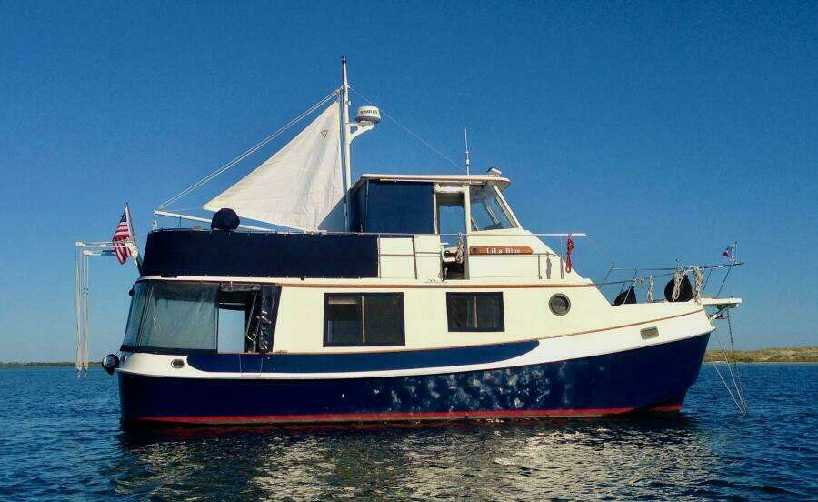

Kadey-Krogen 36 Manatee Manatee
1984–1992
The Kadey-Krogen 36 Manatee is a purpose-built cruising design from a builder focused on displacement-speed efficiency and long-range use. The family emphasizes substantial tankage, protected single-screw propulsion and liveaboard-oriented interiors; the 38 Cutter is the major exception, combining shoal-draft sailing capability with auxiliary diesel power.

- Length
- 36.33 ft
- Beam
- 13.67 ft
- Draft
- 3.17 ft
- Hull behaviour
- Displacement
- Fuel
- Diesel
- Propulsion
- Shaft
- Engine configuration
- Single Inboard
- Boat family
- Trawler
- Construction
- Fiberglass
Best for
- Couples planning extended liveaboard and long-distance cruising
- Owners prioritizing range, efficiency and protected machinery
- Buyers comfortable with displacement-speed passage planning
Trade-offs
- Low-speed cruising requires patience and weather planning
- Large tankage and systems increase refit and maintenance scope
- Beam and displacement of larger models materially affect marina and haul-out options
Known concerns
- No model-specific concern has been promoted to B-Scout’s evidence threshold. This does not mean the model has no age-, condition- or hull-specific risks.
Inspection focus
- Verify model generation, build year and engine installation from factory documentation
- Inspect cored decks, windows, hatches and hardware penetrations for moisture
- Inspect tanks, fuel transfer/filtration, exhaust and cooling systems
- Inspect shaft, rudder, stern gear and keel protection
- Review electrical, charging, generator and navigation-system refits
Continue researching
Related boat models
42.33 ft · Displacement
43.67 ft · Displacement
36.25 ft · Semi-Displacement
36.5 ft · Semi-Displacement
36.58 ft · Semi-Displacement
36.58 ft · Semi-Displacement
About this record
B-Scout preserves uncertainty: missing information remains unknown rather than being treated as a negative. Specifications and guidance describe the model record; individual boats can differ by year, equipment, refit and condition.